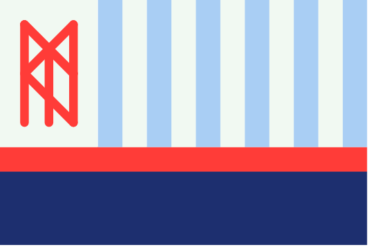
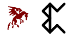

Uttmark

Tribes
Thunderbeast
The largest and most powerful of the Uthgardt tribes, the Thunderbeast Tribe lay claim to the holiest site in the Uthgardt faith: Morgur's Mound. By far the most organised and, by Southern standards, civilised of the Uthgardt tribes, the Thunderbeasts are the major military power in the area.
Grey Wolf
The Grey Wolf tribe are fanatically devoted to their animal totem, so much so that lifelong members of the tribe can transform into wolves on a full moon. They are fearsome warriors and unmatched hunters, able to survive and thrive in their hostile, cold environment. Most consider them to be the most "savage" of the Uthgardt tribes.
Elk
By far the most agrarian tribe, the Elk tribe are known even in the south for the high quality meat and pelts of their elk. Though less militaristically powerful than other tribes, the tribe is among the most populous in the region. In recent years, their lands have been encroached upon by the DIR, placing severe strain on their large population and threatening their elk-herding way of life.
Griffon
The Griffon tribe are a hardy bunch whose advanced farming techniques allow them to grow crops in even the hardest ground. Their primary crop is barley, used to make the ale drank by the vast majority of Uthgardt people. As the only other agrarian tribe, they are bitter rivals of the Elk tribe.
Sky Pony

As primarily nomadic people, the Uthgardt have relatively few man-made monuments. One which has endured, however, is the arena. Here, prisoners captured by all other tribes are brought to do battle for their freedom, in a tournament of honour with tremendous significance for the Uthgardt. The Sky Pony tribe depend heavily on income from these tournaments and are fanatical in their devotion to formal combat.
Black Lion
The major economic force in the region, the Black Lion tribe are keen modernisers, even abandoning their nomadic lifestyle in favour of settlements. As major purchasers of goods from the Elk and Griffon tribe, they have strong relations with both and are often mediators in disputes between the two rivals.
Black Raven
The Black Raven tribe rival the Grey Wolves for their absolute devotion to the old ways, though they are less committed to primalism and more to prolific raiding. The giant ravens native to the region, from whom they take their totem, are large enough that they can be ridden. The Black Raven tribe make frequent use of this, surprising distant settlements with attacks from above. They are so large and intimidating as a group that they are often mistaken for an approaching dragon.
Red Tiger
The westernmost tribe, the Red Tigers, are known throughout the Sword Coast as fearsome raiders. Their seafaring ways are seen as unusual among the other tribes, but their prowess in battle and prolific raiding earns them a healthy level of respect, even among hardline traditionalists like the Grey Wolf tribe.
Great Worm
Little is known about the Great Worm tribe. This reclusive people have minimal interaction with the other tribes, save for at the Great Blot every seven years. One thing which is known, however, is that they are a cunning and fierce people, as King Many Arrows discovered when attempting to annex their land in the Spine Of The World.
Tree Ghost
The Tree Ghost tribe are rarely seen, even by other Uthgardt tribes. These morbid and mysterious folk are intensely attuned to the natural world and, unlike most Uthgardt, are adept casters. They have close links to the local wood elf settlements, sharing a common interest in nature. So much so that their Jarl, Norn, is herself the daughter of a wood elf couple who joined the tribe.
Blue Bear
The Blue Bear tribe, save for a few fanatical berserkers living deep in the forests of their old claim, are extinct. A devastating war with the Grey Wolf tribe in ages past wiped them out completely, their settlements are little more than charred ruins. Despite this, the Grey Wolf tribe did not annex their land, as it is not the Uthgardt way, so their lands now lie in disuse.
Contents
🡐 PlacesNotable Uthgardt